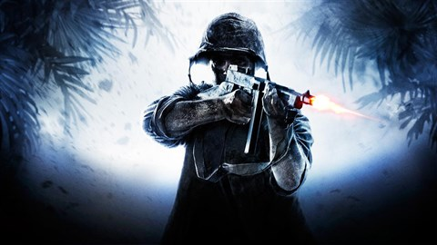
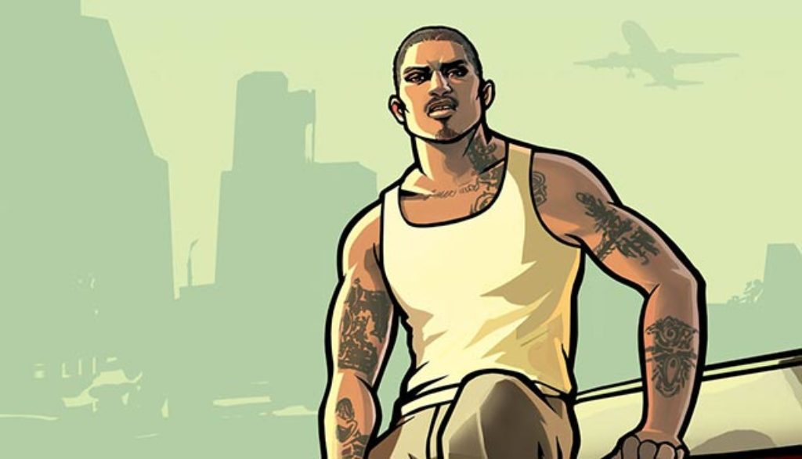
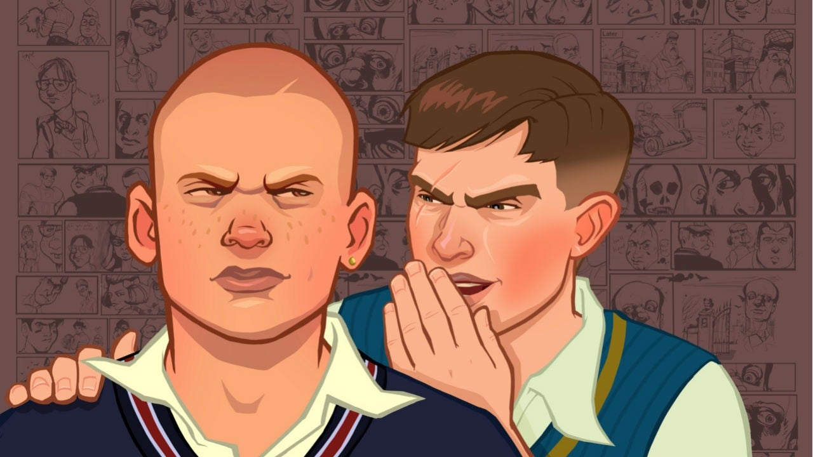

Call of Duty: World at War
World at War, predecessor da franquia Black Ops, é um dos jogos mais memoráveis que eu já joguei. Esse Call of Duty te lança no meio da Segunda Guerra Mundial e não se poupa, nem por um segundo, em garantir que você experiencie o horror da guerra. Ele não tenta o entreter por meio de situações épicas, mas mostrando a verdadeira realidade dos soldados e as atrocidades que ocorreram na WW2.
Longe de ser 100% historicamente correto, Call of Duty: World at War ainda irá fazer você entender o quão brutal pode ser uma guerra. Para mim, é uma obra prima que dificilmente terá alguém para rivalizar por muito tempo.
GTA: San Andreas
Grand Theft Auto: San Andreas é um melhores jogos que ja existiram para muita gente, e para mim sua experiência não foi diferente. O mundo aberto do San Andreas lhe garante horas e horas de entretenimento, sem precisar necessariamente progredir na história do jogo.
Dito isto, a história do jogo também é muito marcante. Acompanhar a história do famoso CJ, percorrendo as cidades de Los Santos, Las Venturas e San Fierro - conhecendo inúmeros personagens, todos muito bem escritos, e realizando épicas missões.
Bully
Bully é, com certeza, um dos meus jogos favoritos. Tendo já zerado duas vezes e indo para a terceira vez. O jogo te oferece uma experiência inesquecível se ambientando no internato de Bullworth Academy, onde o bullying é algo rotineiro e onde chega o deliquente, e protagonista, Jimmy Hopkins.
O seu mundo aberto é algo fascinante, tendo diversas missões (desde corridas até fliperamas) para o entreter mesmo após concluir a história. Mas o grande trunfo de Bully é mesmo a progressão da história, sendo muito envolvente e com diversos personagens cativantes.